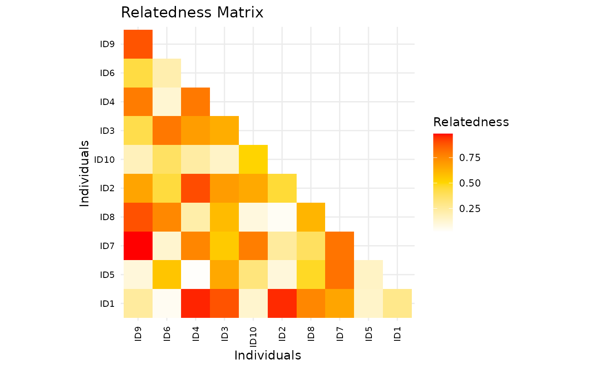

Plot a relatedness matrix as a heatmap (ggpedigree style)
Source:R/ggRelatednessMatrix.R
ggRelatednessMatrix.RdPlots a relatedness matrix using ggplot2 with config options.
Usage
ggRelatednessMatrix(
mat,
config = list(),
interactive = FALSE,
tooltip_columns = NULL,
personID = "personID",
...
)Arguments
- mat
A square numeric matrix of relatedness values (precomputed, e.g., from ped2add).
- config
A list of graphical and display parameters. See Details for available options.
- interactive
Logical; if TRUE, returns an interactive plotly object.
- tooltip_columns
A character vector of column names to include in tooltips.
- personID
Character; name of the column containing unique person identifiers.
- ...
Additional arguments passed to ggplot2 layers.
Details
Config options include:
- matrix_color_palette
A vector of colors for the heatmap (default: Reds scale)
- color_scale_midpoint
Numeric midpoint for diverging color scale (default: 0.25)
- plot_title
Plot title
- matrix_cluster
Logical; should rows/cols be clustered (default: TRUE)
- axis_x_label, axis_y_label
Axis labels
- axis_text_size
Axis text size
Examples
# Example relatedness matrix
set.seed(123)
mat <- matrix(runif(100, 0, 1), nrow = 10)
rownames(mat) <- paste0("ID", 1:10)
colnames(mat) <- paste0("ID", 1:10)
# Plot the relatedness matrix
ggRelatednessMatrix(mat,
config = list(
matrix_color_palette = c("white", "gold", "red"),
color_scale_midpoint = 0.5,
matrix_cluster = TRUE,
plot_title = "Relatedness Matrix",
axis_x_label = "Individuals",
axis_y_label = "Individuals",
axis_text_size = 8
)
)
#> Warning: The following config values are not recognized by getDefaultPlotConfig(): matrix_color_palette, matrix_cluster
